clean_mem()Initializations
Weights should be initialized apropriately
Adapted from:
set_seed(42)
plt.style.use("ggplot")Probability, Miscellaneous
- “Average error” is typically 0 because positive and negative errors cancel out, making this metric not useful. We avoid this by using “{Root, }Mean Squared Error,” which counts large errors more strongly
- Variance
In probability theory and statistics, variance is the expected value of the squared deviation from the mean of a random variable
https://en.wikipedia.org/wiki/Variance
\[\sigma^2 = \sum \frac{(x-\mathbb{E}[X])^2}{N}\]
This version is quicker to calculate:
\[\sigma^2 = \mathbb{E}[X^2] - \mathbb{E}[X]^2\]
- Convariance
Covariance in probability theory and statistics is a measure of the joint variability of two random variables.
https://en.wikipedia.org/wiki/Covariance
\[\operatorname{cov}(X,Y) = \operatorname{E}{\big[(X - \operatorname{E}[X])(Y - \operatorname{E}[Y])\big]}\]
You can think about this as the average product of residuals of different features. If two features “co-vary,” these products will be very large or very small; if not, they the products will be totally random and the sum will be small (because different directions cancel eachother out).
- Pearson correlation coefficient
\[\rho_{X,Y}= \frac{\operatorname{cov}(X,Y)}{\sigma_X \sigma_Y}\]
Think of this as a normalized covariance.
Baseline
Let’s look at a fashion MNIST classification problem. Our goal is to get accuracy to at least 90%.
class CNN(nn.Module):
"""Six layer convolutional neural network"""
def __init__(self):
super().__init__()
self.layers = nn.Sequential(
Conv2dWithReLU(1, 8, kernel_size=5, stride=2, padding=2), # 14x14
Conv2dWithReLU(8, 16, kernel_size=3, stride=2, padding=1), # 7x7
Conv2dWithReLU(16, 32, kernel_size=3, stride=2, padding=1), # 4x4
Conv2dWithReLU(32, 64, kernel_size=3, stride=2, padding=1), # 2x2
nn.Conv2d(64, 10, kernel_size=3, stride=2, padding=1), # 1x1
)
def forward(self, x):
x = self.layers(x)
return rearrange(x, "bs c w h -> bs (c w h)")Let’s start by finding the learning rate.
This diverges very quickly
TrainLearner(
CNN(),
fashion_mnist(),
F.cross_entropy,
lr=0.6,
cbs=[LRFinderCB(), MomentumCB()],
).fit()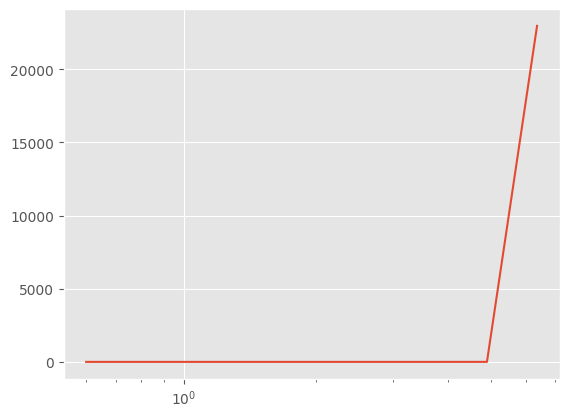
That’s unusable. Let’s dial down the learning rate increase and start at a lower learning rate.
LRFinderCB?Init signature: LRFinderCB(gamma=1.3, max_mult=3) Docstring: Find an apopriate learning rate by increasing it by a constant factor for each batch until the loss diverges File: ~/Desktop/SlowAI/nbs/slowai/learner.py Type: type Subclasses:
TrainLearner(
CNN(),
fashion_mnist(64),
F.cross_entropy,
lr=1e-2,
cbs=[LRFinderCB(gamma=1.05), MomentumCB()],
).fit()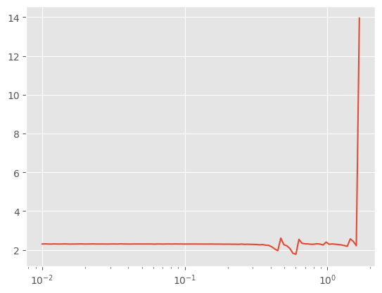
model = CNN()
stats = StoreModuleStatsCB(mods=model.layers)
cbs = [
MomentumCB(),
MetricsCB(MulticlassAccuracy(num_classes=10)),
DeviceCB(),
ProgressCB(plot=True),
stats,
]
TrainLearner(
model,
fashion_mnist(),
F.cross_entropy,
lr=0.6,
cbs=cbs,
).fit(2)| MulticlassAccuracy | loss | epoch | train |
|---|---|---|---|
| 0.168 | 2.378 | 0 | train |
| 0.100 | 2.301 | 0 | eval |
| 0.165 | 2.262 | 1 | train |
| 0.200 | 2.239 | 1 | eval |
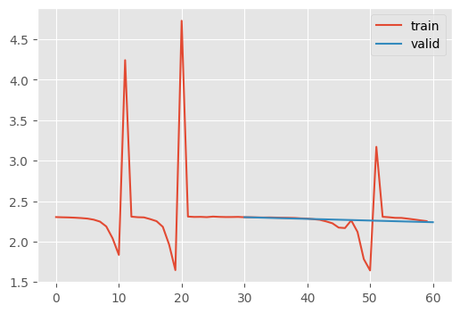
stats.hist_plot()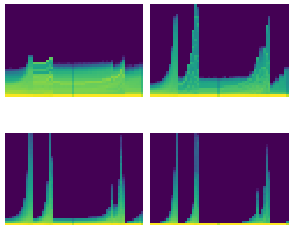
The issue with neural networks in real life is that they must be represented by discrete data structures. These can overflow…
x = torch.randn(200, 100)
for i in range(50):
x = x @ torch.randn(100, 100)
x[0:5, 0:5]tensor([[nan, nan, nan, nan, nan],
[nan, nan, nan, nan, nan],
[nan, nan, nan, nan, nan],
[nan, nan, nan, nan, nan],
[nan, nan, nan, nan, nan]])…or underflow..
x = torch.randn(200, 100)
for i in range(50):
x = x @ torch.randn(100, 100) * 0.01
x[0:5, 0:5]tensor([[0., 0., 0., 0., 0.],
[0., 0., 0., 0., 0.],
[0., 0., 0., 0., 0.],
[0., 0., 0., 0., 0.],
[0., 0., 0., 0., 0.]])We should scale our weights such that, throughout the training process, the mean remains near 0 and the standard deviation remains near 1. Otherwise, we are suseptible to these “dead units”
Glorot/Xavier
Normally, the mean variance of a layer is approximately the number of output dimensions
for d in [1, 100]:
means = []
sqrs = []
for _ in range(500):
x = torch.randn(d)
a = torch.randn(512, d)
y = a @ x
means.append(y.mean())
sqrs.append(y.pow(2).mean())
res = torch.stack(means).mean(), torch.stack(sqrs).mean()
print(res)(tensor(-0.0011), tensor(1.1372))
(tensor(-0.0029), tensor(100.2205))To encourage of variance of 1, the paper from Xavier Glorot and Yoshua Bengio proposed that each layer have a coefficient of \(\frac{1}{\sqrt{d}}\) where \(d\) is the number of inputs
d = 100
x = torch.randn(200, d)
for i in range(50):
layer = torch.randn(d, d) * (1 / math.sqrt(d))
x = x @ layer
x[0:5, 0:5]tensor([[ 1.7367, -0.3418, -2.1874, -0.9467, 1.0451],
[ 0.7802, 0.3702, -0.9278, 0.1607, 0.7578],
[-2.0552, 1.0210, 1.7889, 0.1260, -1.0092],
[-0.4922, -0.1349, 0.0443, -0.3037, -0.1711],
[ 0.0103, 0.0468, -0.6201, -1.1773, 0.1258]])Indeed, this gives us reasonable numbers! However, this doesn’t work for modern deep learning because of the activation layers.
Kaiming/He init
Notice that the first layer of a neural network has a favorable activation distribution
d1, d2 = 100, 100
x = torch.randn(200, d1)
y = torch.randn(200)
w = torch.randn(d1, d2) / math.sqrt(d1)
b = torch.zeros(d2)l1 = x @ w + b
l1.mean(), l1.std()(tensor(0.0034), tensor(0.9888))But what happens when we add non-linearities?
def relu(x):
return x.clamp_min(0.0)
l1r = relu(l1)
l1r.mean(), l1r.std()(tensor(0.3943), tensor(0.5795))Indeed, this property is lost…thus goes the path to ruin…
l = l1r
for _ in range(50):
w = torch.randn(d2, d2) * math.sqrt(1 / d2)
l = relu(l @ w)
l[0:5, 0:5]tensor([[3.6994e-08, 0.0000e+00, 9.4013e-09, 1.5577e-08, 1.0590e-08],
[5.5068e-08, 0.0000e+00, 1.1871e-08, 2.4266e-08, 1.3567e-08],
[9.3161e-08, 0.0000e+00, 2.2955e-08, 4.0294e-08, 2.4063e-08],
[4.9314e-08, 0.0000e+00, 1.1283e-08, 2.1542e-08, 1.3132e-08],
[3.8813e-08, 0.0000e+00, 9.7021e-09, 1.6069e-08, 1.1153e-08]])To rectify this situation, Kaiming proposed using \(\sqrt{\frac{2}{d}}\) 😂
l = l1r
for _ in range(50):
w = torch.randn(d2, d2) * math.sqrt(2 / d2)
l = relu(l @ w)
l[0:5, 0:5]tensor([[0.0218, 0.0350, 0.0000, 0.4040, 0.0000],
[0.1481, 0.0000, 0.0000, 0.5991, 0.0000],
[0.0582, 0.1006, 0.0000, 0.7180, 0.0162],
[0.1623, 0.0000, 0.0000, 0.9592, 0.0000],
[0.1217, 0.0169, 0.0000, 0.6792, 0.0000]])Notice, there are still positive numbers even after 50 layers!
This is the best way to initialize a network. But how do we do this on a code level? We use the .apply() method.
def init_weights(module):
# `kaiming_normal_` is an in-place operation, unlike `kaiming_normal`
if not isinstance(module, (nn.Sequential, Conv2dWithReLU, CNN)):
init.kaiming_normal_(module.weight)model = CNN()
model.apply(init_weights)
learn = TrainLearner(
CNN(),
fashion_mnist(64),
F.cross_entropy,
lr=1e-2,
cbs=[LRFinderCB(gamma=1.05), MomentumCB()],
).fit()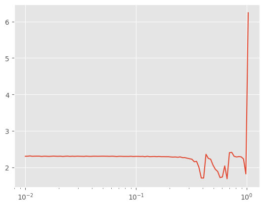
Better! Let’s try training with 0.25.
model = CNN()
model.apply(init_weights)
stats = StoreModuleStatsCB(mods=model.layers)
cbs = [
MetricsCB(MulticlassAccuracy(num_classes=10)),
DeviceCB(),
ProgressCB(plot=True),
MomentumCB(),
stats,
]
TrainLearner(
model,
fashion_mnist(),
F.cross_entropy,
lr=0.25,
cbs=cbs,
).fit(2)| MulticlassAccuracy | loss | epoch | train |
|---|---|---|---|
| 0.547 | 1.434 | 0 | train |
| 0.718 | 0.717 | 0 | eval |
| 0.748 | 0.654 | 1 | train |
| 0.763 | 0.624 | 1 | eval |
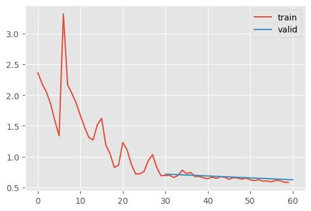
stats.mean_std_plot()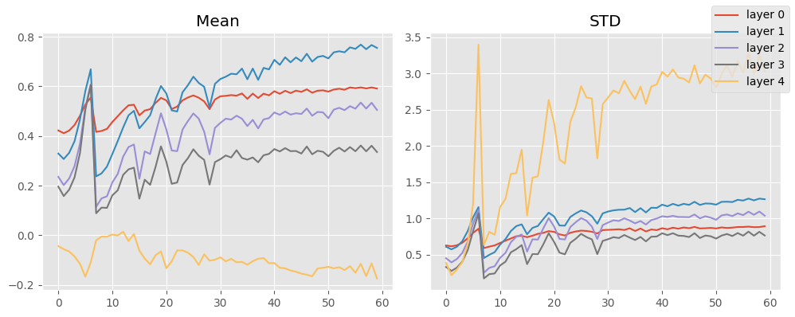
That’s okay. Keep in mind, I didn’t include momentum, like Jeremy; but I did globally normalize the inputs.
Let’s try normalizing batchwise.
BatchTransformCB
BatchTransformCB (tfm, on_train=True, on_val=True)
Arbitrarily transform a batch
NormalizeBatchCB
NormalizeBatchCB (on_train=True, on_val=True)
Unit normalize a batch
model = CNN()
model.apply(init_weights)
stats = StoreModuleStatsCB(mods=model.layers)
dls = fashion_mnist()
cbs = [
MetricsCB(MulticlassAccuracy(num_classes=10)),
DeviceCB(),
ProgressCB(plot=True),
NormalizeBatchCB(),
MomentumCB(),
stats,
]
learn = TrainLearner(
model,
dls,
F.cross_entropy,
lr=0.25,
cbs=cbs,
)
learn.fit(2)| MulticlassAccuracy | loss | epoch | train |
|---|---|---|---|
| 0.550 | 1.401 | 0 | train |
| 0.708 | 0.809 | 0 | eval |
| 0.756 | 0.663 | 1 | train |
| 0.773 | 0.626 | 1 | eval |
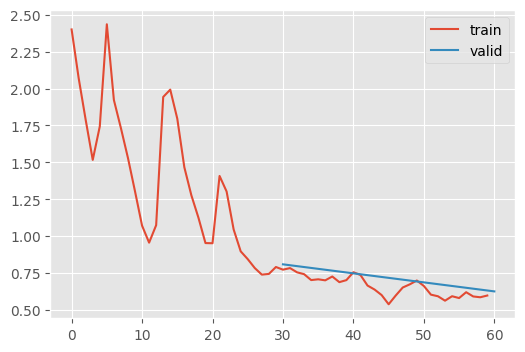
stats.mean_std_plot()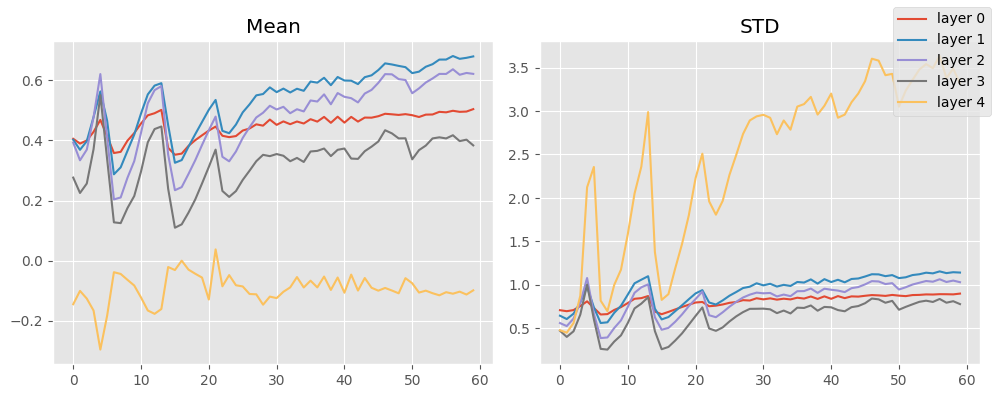
This isn’t much better, unsurprisingly since it was already normalized.
Why are these activations distribution not unit normal?
The problem is the StoreModuleStatsCB looks at the output of the ReLU + Convolutional blocks, which cannot output negative numbers (except for the last layer which does not have an non-linearity). Therefore, their output cannot look unit normal!
What if we modified ReLU to allow unit normality?
\[ \text{GeneralReLU}_{l,r,m}(x) = max(\{m, \left. \begin{cases} x & \text{if } x > 0 \\ l \cdot x & \text{otherwise} \end{cases} \right\} - r \}) \]
class GeneralReLU(nn.Module):
def __init__(self, leak=None, sub=None, max_=None):
super().__init__()
self.leak = leak
self.sub = sub
self.max_ = max_
def forward(self, x):
if self.leak:
x = F.leaky_relu(x, self.leak)
else:
x = F.relu(x)
if self.sub:
x -= self.sub
if self.max_:
x.clamp_max_(self.max_)
return xThis should output a roughly unit normal distribution by pushing all the values down and allowing some contribution from negative values.
x = torch.linspace(-5, 5, steps=100)
gr = GeneralReLU(leak=0.1, sub=0.4)
plt.plot(x, gr(x));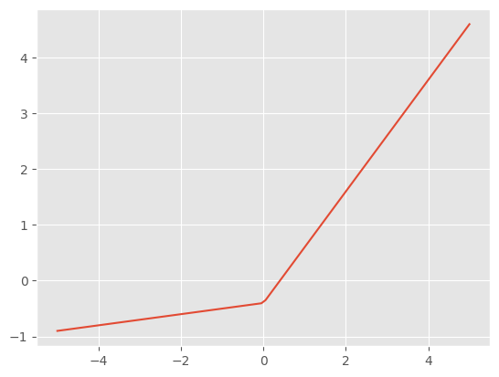
C = Conv2dWithReLU
class CNNWithGeneralReLU(nn.Module):
"""Six layer convolutional neural network with GeneralRelU"""
def __init__(self, gr=lambda: GeneralReLU(leak=0.1, sub=0.4)):
super().__init__()
layers = [ #
C(1, 8, kernel_size=5, stride=2, padding=2, nonlinearity=gr()), # 14x14
C(8, 16, 3, 2, 1, nonlinearity=gr()), # 7x7
C(16, 32, 3, 2, 1, nonlinearity=gr()), # 4x4
C(32, 64, 3, 2, 1, nonlinearity=gr()), # 2x2
nn.Conv2d(64, 10, 3, 2, 1), # 1x1
]
self.layers = nn.ModuleList(layers)
def forward(self, x):
for layer in self.layers:
x = layer(x)
*_, w, h = x.shape
assert w == h == 1
return rearrange(x, "bs c w h -> bs (c w h)")⚠️ Now that we are no longer using ReLU outputs, so Kaiming initialization is not acceptable! Luckily, there is an adjustment for this leaky property in the pytorch script
def init_leaky_weights(module, leak=0.0):
if isinstance(module, (nn.Conv2d,)):
init.kaiming_normal_(
module.weight,
a=leak, # 👈 weirdly, called `a` here
)leak = 0.1
model = CNNWithGeneralReLU(gr=lambda: GeneralReLU(leak=leak, sub=0.4))
model.apply(partial(init_leaky_weights, leak=leak))
stats = StoreModuleStatsCB(mods=model.layers)
cbs = [
MetricsCB(MulticlassAccuracy(num_classes=10)),
DeviceCB(),
ProgressCB(plot=True),
NormalizeBatchCB(),
MomentumCB(),
stats,
]
learn = TrainLearner(
model,
fashion_mnist(),
F.cross_entropy,
lr=0.25,
cbs=cbs,
)
learn.fit(2)| MulticlassAccuracy | loss | epoch | train |
|---|---|---|---|
| 0.626 | 1.100 | 0 | train |
| 0.721 | 0.780 | 0 | eval |
| 0.774 | 0.618 | 1 | train |
| 0.771 | 0.627 | 1 | eval |
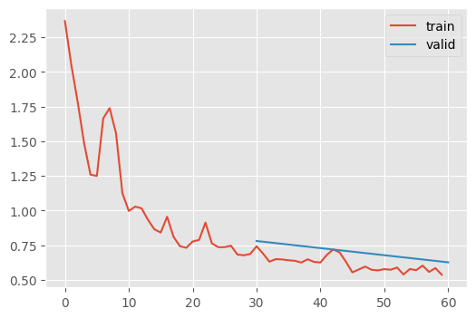
stats.mean_std_plot()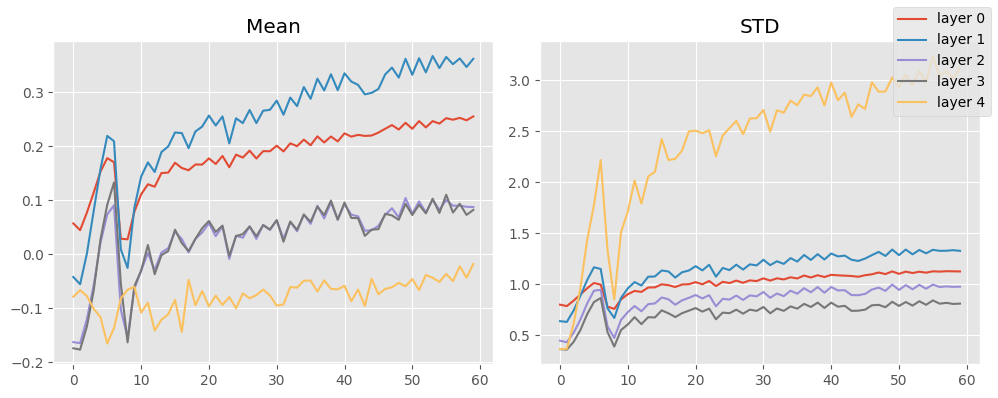
That looks GREAT 🤩 What happens if we keep on training that?
learn.fit(10)| MulticlassAccuracy | loss | epoch | train |
|---|---|---|---|
| 0.810 | 0.522 | 0 | train |
| 0.756 | 0.675 | 0 | eval |
| 0.827 | 0.476 | 1 | train |
| 0.800 | 0.557 | 1 | eval |
| 0.837 | 0.448 | 2 | train |
| 0.825 | 0.489 | 2 | eval |
| 0.846 | 0.424 | 3 | train |
| 0.835 | 0.468 | 3 | eval |
| 0.853 | 0.403 | 4 | train |
| 0.841 | 0.450 | 4 | eval |
| 0.857 | 0.394 | 5 | train |
| 0.837 | 0.458 | 5 | eval |
| 0.860 | 0.382 | 6 | train |
| 0.851 | 0.423 | 6 | eval |
| 0.866 | 0.370 | 7 | train |
| 0.852 | 0.421 | 7 | eval |
| 0.868 | 0.365 | 8 | train |
| 0.847 | 0.441 | 8 | eval |
| 0.870 | 0.356 | 9 | train |
| 0.860 | 0.403 | 9 | eval |
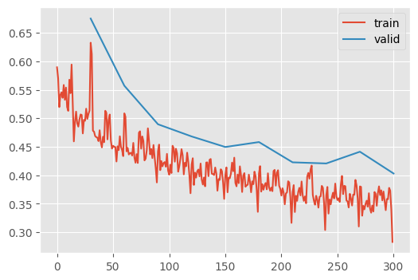
86% accuracy! Not bad.
This goes to show that initialization is underappreciated.
General Initializations
“All You Need Is a Good Init” proposed that there is a generic strategy to initialize any model.
- Setup your model any way you like
- Pass a batch of data through the model and record the layer wise activation statistics
- Apply a unit normalization
- Repeat step 2 until the activation statistics are unit normal within an acceptable tolerance
In code:
LSUVHook
LSUVHook (m, tol=0.001)
A hook for performing LSUV for a single layer
LSUVInitialization
LSUVInitialization (seed_hook_f, mods=None, mod_filter=<function noop>, on_train=True, on_valid=False)
Layer wise sequential unit variance initialization
leak = 0.1
model = CNNWithGeneralReLU(gr=lambda: GeneralReLU(leak=leak, sub=0.4))
# Note that we're removing the `model.apply` in favor of LSUVInitialization
dls = fashion_mnist()
idls = iter(dls["train"])
def lsuv_seeder():
batch = next(idls)
batch = to_device(batch)
xb, _ = batch
model(xb)
lsuv_init = LSUVInitialization(lsuv_seeder, mods=model.layers)
stats = StoreModuleStatsCB(mods=model.layers)
cbs = [
MetricsCB(MulticlassAccuracy(num_classes=10)),
DeviceCB(),
ProgressCB(plot=True),
NormalizeBatchCB(),
MomentumCB(),
lsuv_init,
stats,
]
learn = TrainLearner(
model,
dls,
F.cross_entropy,
lr=0.25,
cbs=cbs,
)
learn.fit(12)| MulticlassAccuracy | loss | epoch | train |
|---|---|---|---|
| 0.221 | 2.224 | 0 | train |
| 0.479 | 1.648 | 0 | eval |
| 0.623 | 1.107 | 1 | train |
| 0.667 | 0.862 | 1 | eval |
| 0.720 | 0.750 | 2 | train |
| 0.737 | 0.716 | 2 | eval |
| 0.757 | 0.649 | 3 | train |
| 0.752 | 0.672 | 3 | eval |
| 0.773 | 0.596 | 4 | train |
| 0.766 | 0.634 | 4 | eval |
| 0.794 | 0.545 | 5 | train |
| 0.776 | 0.610 | 5 | eval |
| 0.807 | 0.513 | 6 | train |
| 0.788 | 0.573 | 6 | eval |
| 0.819 | 0.484 | 7 | train |
| 0.797 | 0.547 | 7 | eval |
| 0.828 | 0.466 | 8 | train |
| 0.809 | 0.518 | 8 | eval |
| 0.835 | 0.448 | 9 | train |
| 0.820 | 0.495 | 9 | eval |
| 0.841 | 0.431 | 10 | train |
| 0.819 | 0.497 | 10 | eval |
| 0.846 | 0.419 | 11 | train |
| 0.829 | 0.472 | 11 | eval |
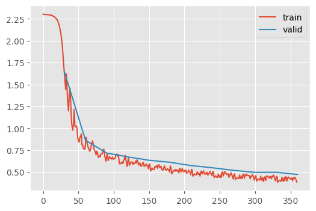
Its not quite as accurate, but the curvature very smoother and it looks like I could train for even longer.
learn.fit(12)| MulticlassAccuracy | loss | epoch | train |
|---|---|---|---|
| 0.850 | 0.406 | 0 | train |
| 0.827 | 0.470 | 0 | eval |
| 0.854 | 0.397 | 1 | train |
| 0.835 | 0.450 | 1 | eval |
| 0.857 | 0.387 | 2 | train |
| 0.834 | 0.452 | 2 | eval |
| 0.861 | 0.380 | 3 | train |
| 0.841 | 0.435 | 3 | eval |
| 0.865 | 0.368 | 4 | train |
| 0.841 | 0.437 | 4 | eval |
| 0.864 | 0.370 | 5 | train |
| 0.846 | 0.423 | 5 | eval |
| 0.870 | 0.356 | 6 | train |
| 0.842 | 0.435 | 6 | eval |
| 0.868 | 0.358 | 7 | train |
| 0.851 | 0.407 | 7 | eval |
| 0.873 | 0.345 | 8 | train |
| 0.854 | 0.405 | 8 | eval |
| 0.872 | 0.348 | 9 | train |
| 0.857 | 0.396 | 9 | eval |
| 0.877 | 0.335 | 10 | train |
| 0.859 | 0.391 | 10 | eval |
| 0.875 | 0.338 | 11 | train |
| 0.857 | 0.398 | 11 | eval |
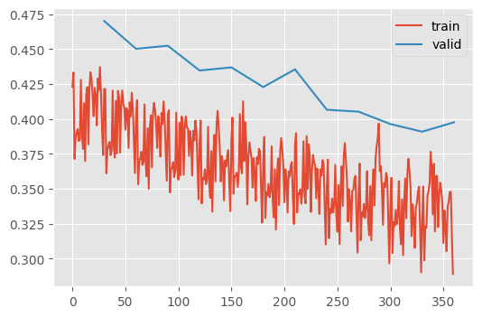
86% accuracy, again. Not an improvement, but this callback approach has a better DX.